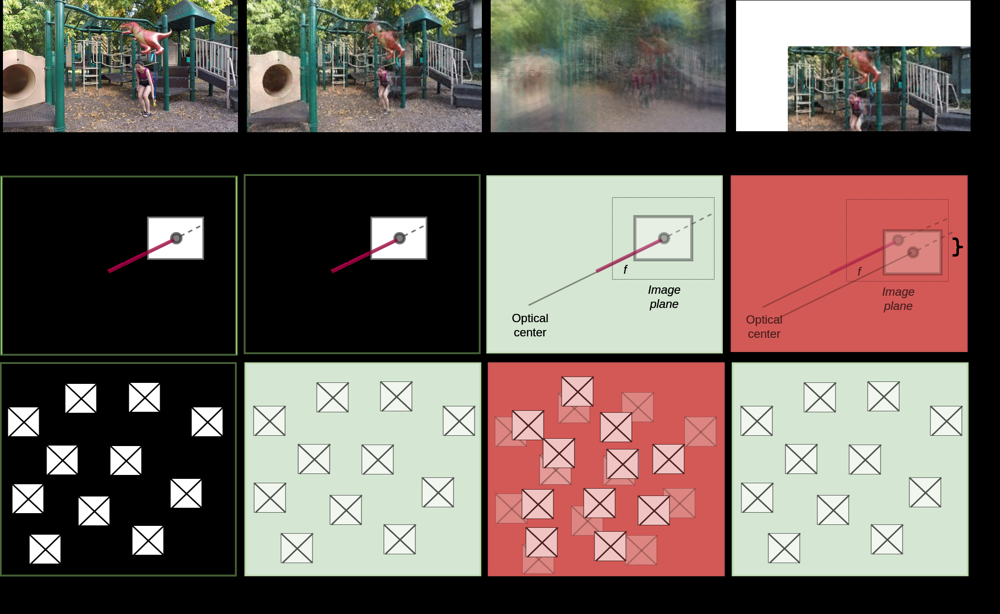

LatentGS: Probabilistic Densification for Efficient, Compact, and Faster 3D Gaussian Splatting
S. Khalid, M. Ibrahim, Y. Liu
ICLR 2026Neural rendering · variational densification
Senior Research Scientist, Huawei Canada · PhD, University of Toronto
Toronto, Canada · skhalid [at] cs.toronto.edu
Citation metrics from Google Scholar · auto-updated daily
I am a Senior Research Scientist at Huawei Canada, working on 3D computer vision and neural rendering. I completed my PhD in Computer Science (Computer Vision) at the University of Toronto, advised by Prof. Frank Rudzicz, where my thesis focused on self-supervised visual scene understanding using structured representations.
My current research centers on 3D Gaussian splatting and neural rendering — making high-fidelity scene reconstruction more compact, efficient, and controllable — alongside accelerating foundation-model and LLM inference. I also have a long-standing interest in representation learning, explainable AI, and applying machine learning to healthcare, from surgical skill assessment to clinical outcome prediction.




Teaching Assistant at the University of Toronto for courses in machine learning, deep learning, natural language processing, computer vision, and web development.